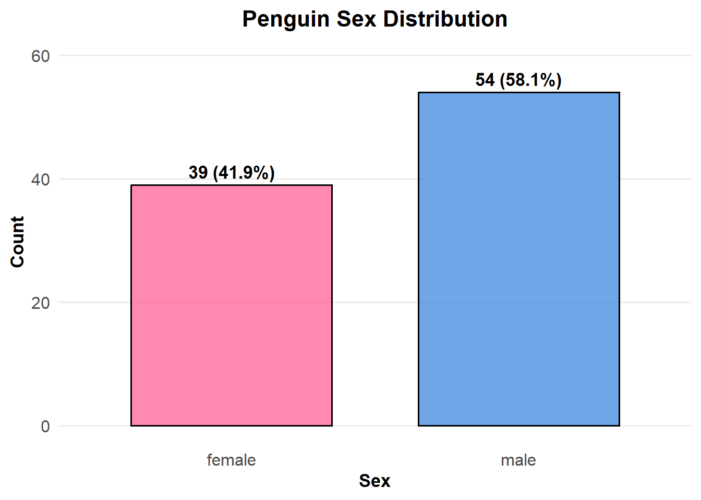

This assignment is about classification model evaluation. Performance metrics for binary classification model could be confusion matrices: TP, FP, TN and FN.
I’ll also showing accuracy, precision , recall and F1 score in table as a evaluation result.
Problems that I anticipated would be if I can find a way to effectively using visual to show result.
Data Exploration
Import data set from given github URL. Verify data loaded correctly and check data types. As shown in the result, there are 93 observations, 3 variables.
library(ggplot2)library(dplyr)
Attaching package: 'dplyr'
The following objects are masked from 'package:stats':
filter, lag
The following objects are masked from 'package:base':
intersect, setdiff, setequal, union
Let’s show the data set 93 penguin sex distribution in plot. the plot shows slightly larger number of males than females, but overall relatively balanced distribution for binary classification.
# Create an enhanced class distribution plotggplot(penguin_data, aes(x = sex, fill = sex)) +geom_bar(alpha =0.8, color ="black", width =0.7) +geom_text(stat ='count', aes(label =paste0(after_stat(count), " (", round(after_stat(count)/nrow(penguin_data)*100, 1), "%)")), vjust =-0.5, size =4.5, fontface ="bold") +scale_fill_manual(values =c("female"="#FF6B9D", "male"="#4A90E2")) +labs(title ="Penguin Sex Distribution",x ="Sex", y ="Count") +theme_minimal(base_size =14) +theme(plot.title =element_text(hjust =0.5, face ="bold", size =16),plot.subtitle =element_text(hjust =0.5, color ="gray40"),legend.position ="none",panel.grid.major.x =element_blank(),panel.grid.minor.y =element_blank(),axis.text =element_text(size =12),axis.title =element_text(size =13, face ="bold") ) +ylim(0, max(table(penguin_data$sex)) *1.1)

Testing and Evaluating model
Compute predicted classes using a threshold of 0.5. Result shows that manual predictions using .pred_class column using a 0.5 threshold is 100% matching with the result.
Build confusion matrices. Create logical conditions for TP, FP,TN,FN. Also add performance score for accuracy, precision, recall and F1-Score. As shown in the result, the model had 93.5% ACCURACY, 92.3% PRECISION 92.3% of recall and 92.3% F1-score.
The objective of this task is to test the model, from above performance evaluating matrix, we can see the model performs well with all metrics above 90%.
Some after thought that about threshold, would performance change with different thresholds?